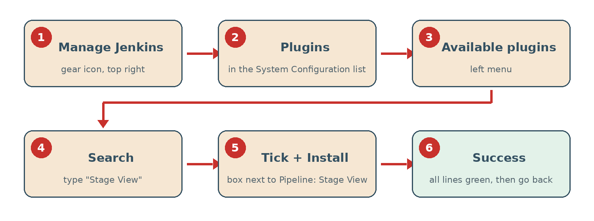

0. Install the Stage View Plugin
Jenkins can show your pipeline as a table: one column per stage, one row per build, with the result and duration of each stage. This view comes from a plugin, Pipeline: Stage View, which is not installed by default in recent versions. Install it now; it takes two minutes.
Before you start: Jenkins is running (docker ps shows jenkins-local), you are logged in at http://localhost:8080 with your admin account, and your computer has Internet access (Jenkins downloads the plugin).
The whole path at a glance:

Step 1: Open Manage Jenkins
- Go to the dashboard: click the Jenkins logo at the top left.
- Click the gear icon at the top right of the page. Its tooltip says Manage Jenkins.
In older versions, Manage Jenkins is a link in the left menu of the dashboard. If you do not see the gear icon or the link, you are not logged in as an administrator.
Step 2: Open Plugins
The Manage Jenkins page lists many settings in groups. In the first group, System Configuration, click Plugins (puzzle-piece icon).
Step 3: Open Available plugins
The Plugins page has four tabs in the left menu:
- Updates: new versions of installed plugins;
- Available plugins: plugins you can install;
- Installed plugins: what is already there;
- Advanced settings: proxy and manual upload.
Click Available plugins. The list may take a few seconds to load.
Step 4: Search for the plugin
In the search box at the top of the list, type:
Stage ViewThe list now shows Pipeline: Stage View, with the description "Pipeline Stage View Plugin" and a version number.
If the list is empty, the plugin may already be installed: look in Installed plugins (see the check below).
Step 5: Tick and install
- Tick the checkbox at the left of Pipeline: Stage View.
- Click the Install button at the top right of the list. In older versions, click Install without restart.
Step 6: Wait for Success
The Download progress page opens. Jenkins downloads the plugin and the other plugins it needs (for example Pipeline: REST API). Each line goes from Pending to Success with a green tick.
- Wait until every line shows Success. This takes 10 to 60 seconds.
- Do not tick "Restart Jenkins when installation is complete": this plugin works without a restart.
- Click Go back to the top page.
Step 7: Check the installation
- Go back to Manage Jenkins › Plugins › Installed plugins.
- Type
Stage Viewin the search box. - Pipeline: Stage View is listed, and its Enabled switch is on.
Plan B: install the plugin from the command line
If the web interface fails (for example a line shows Failure), install the plugin from a terminal with the tool shipped in the Jenkins Docker image, then restart the container:
docker exec jenkins-local jenkins-plugin-cli --plugins pipeline-stage-view -d /var/jenkins_home/plugins
docker restart jenkins-localpipeline-stage-view is the plugin ID. Wait about 30 seconds, log in again, then do Step 7.
Troubleshooting
- A line shows Failure: Jenkins could not download the file. Check the Internet connection of your computer, then go back to Available plugins and install again. If it fails again, use Plan B.
- "There were errors checking the update sites": the computer is offline or behind a proxy. On a school network, ask your teacher for the proxy settings (Plugins › Advanced settings).
- Pipeline: Stage View is not in Available plugins: it is already installed. Check Installed plugins.
- The plugin is installed but disabled: in Installed plugins, turn on its Enabled switch, then restart with
docker restart jenkins-local.
The Stage View table appears on the page of a pipeline job after its first build. You will see it in step 5 of the next page.
What is a plugin?
Jenkins itself does very little: almost every feature comes from a plugin. Git integration, pipelines, Docker support and this Stage View are all plugins. There are about 2,000 of them, managed from Manage Jenkins › Plugins, with four tabs: Updates, Available plugins, Installed plugins and Advanced settings.